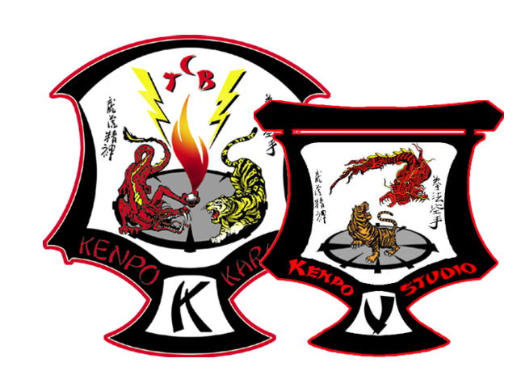
Disciplina · Respeto · Defensa Personal · Legado
Clase de prueba gratuita, sin compromiso
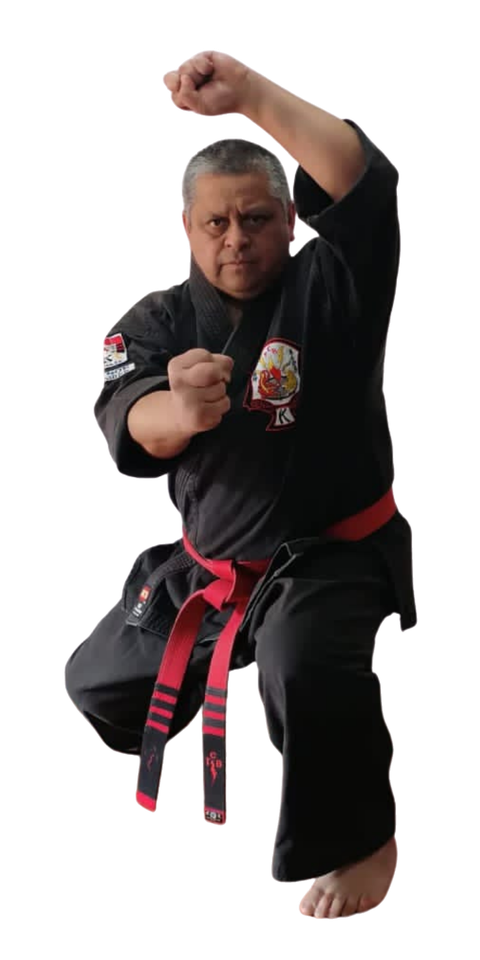
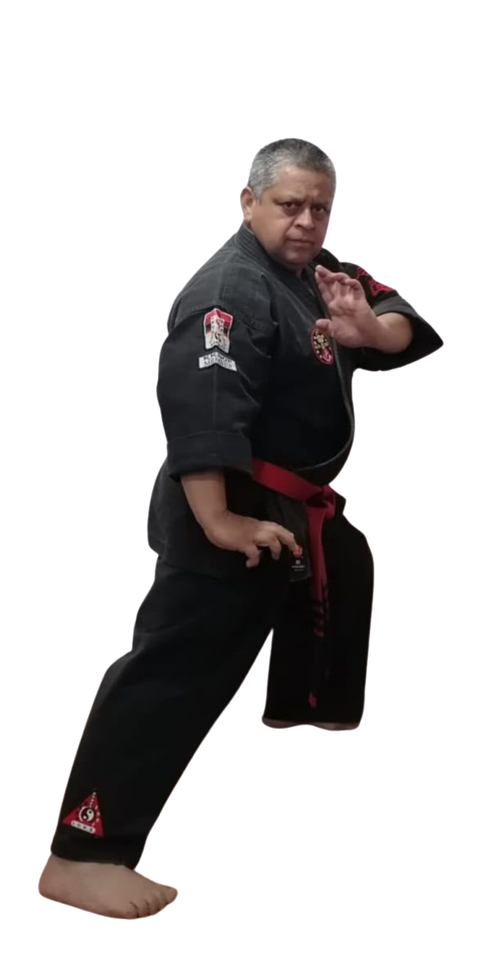
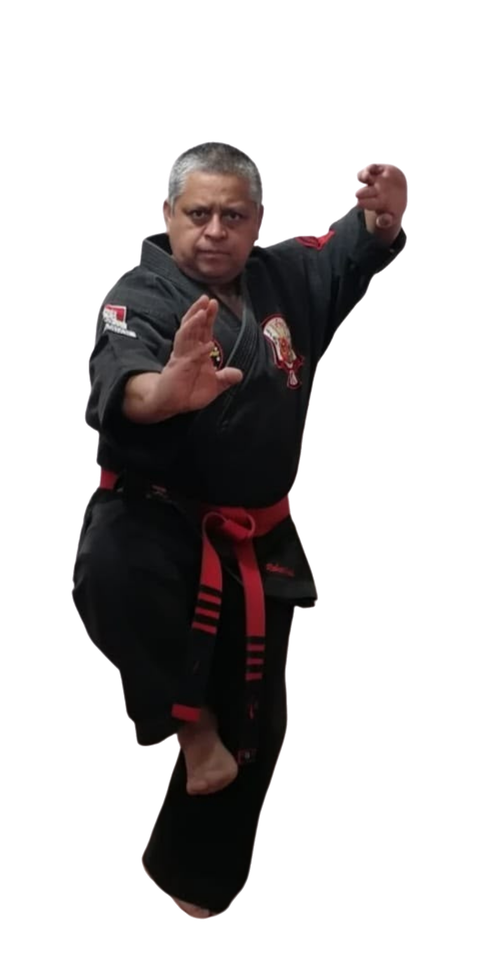
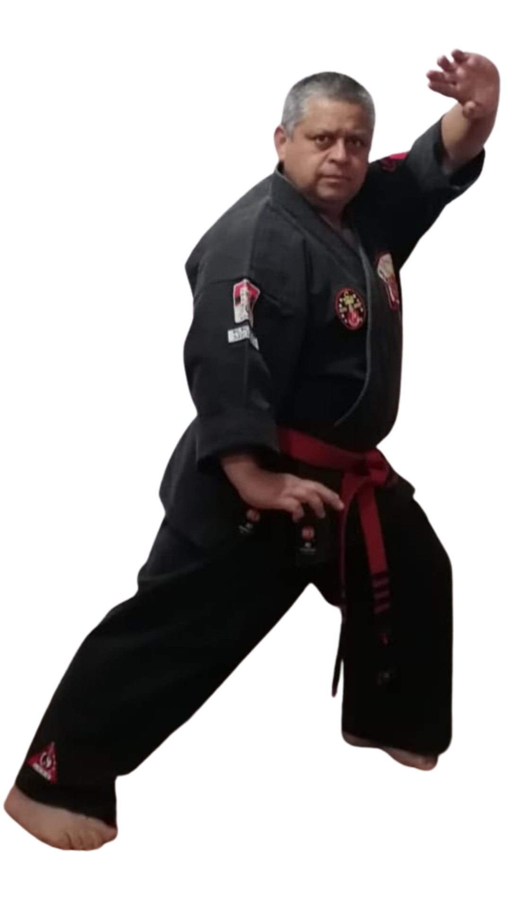
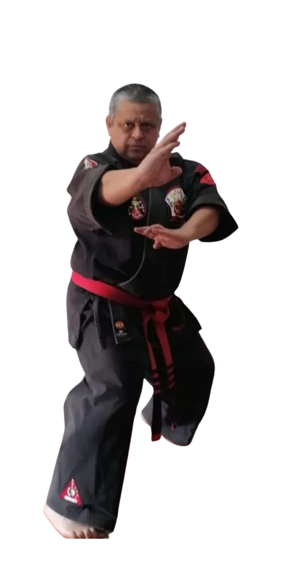
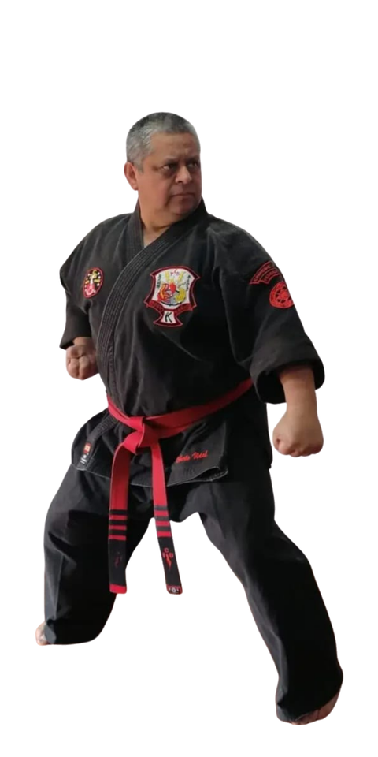
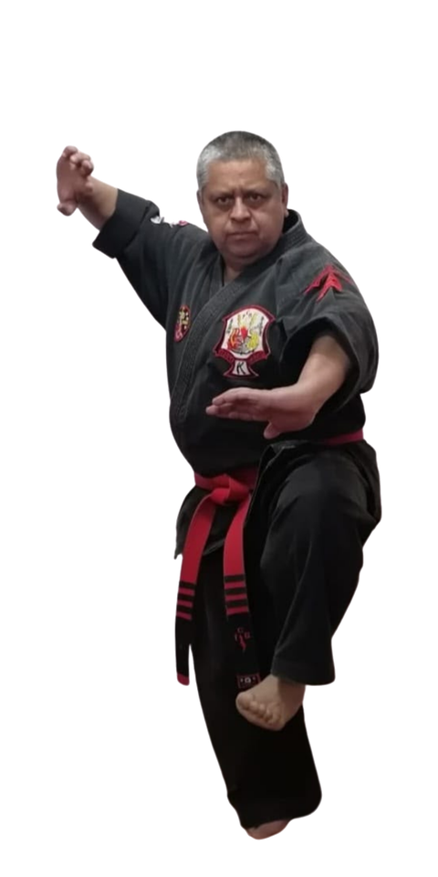
Somos una organización de Kenpo Karate afiliada a la Chinese Karate Federation CKF, con más de 20 escuelas a lo largo de Chile. Bajo el legado de nuestro Senior Grandmaster Edmund Kealoha Parker, formamos practicantes de todas las edades en disciplina, respeto y defensa personal real. Te invitamos a unirte a tu escuela más cercana.
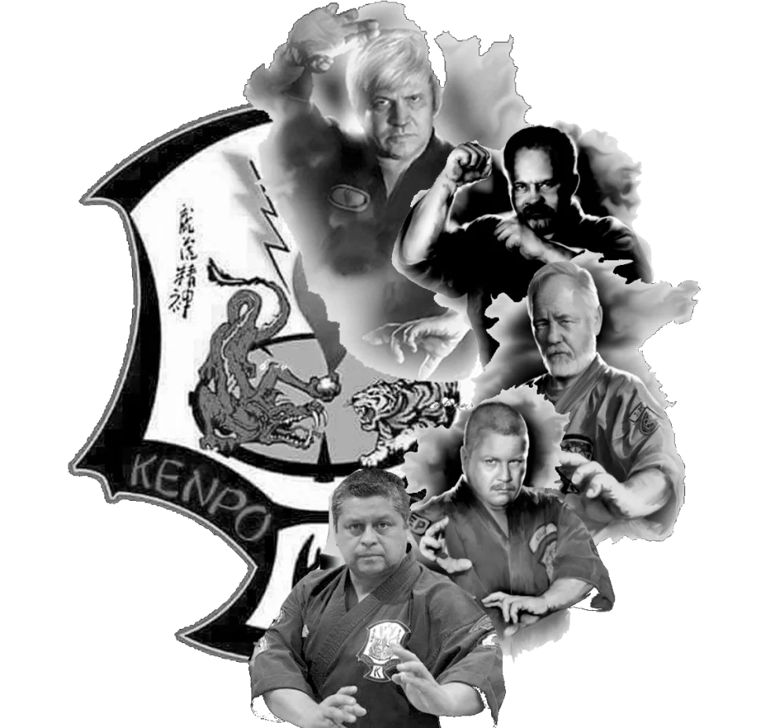
«Vengo hacia ti con las manos vacías, no tengo armas, pero si soy obligado a defenderme, a defender mis principios o mi honor, si es cuestión de vida o muerte, de derecho o de injusticia, entonces aquí están mis armas, el karate, las manos vacías»
«I come to you with only Karate, empty hands. I have no weapons, but should I be forced to defend myself, my principles or my honor, should it be a matter of life or death, right or wrong, then here are my weapons, Karate empty hands»
Buscar escuela
Por nombre de la escuela o de su director
Encuentra la escuela más cercana y comienza tu camino en el Kenpo Karate.
Buscar instructor
Por nombre del instructor
Cuerpo de instructores activos del International Vidal Kenpo Studio / Chinese Karate Federation, organizado por grado.
Buscar maestro
Por nombre del maestro
Maestros certificados con décadas de experiencia en Kenpo Karate.
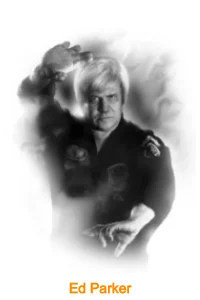
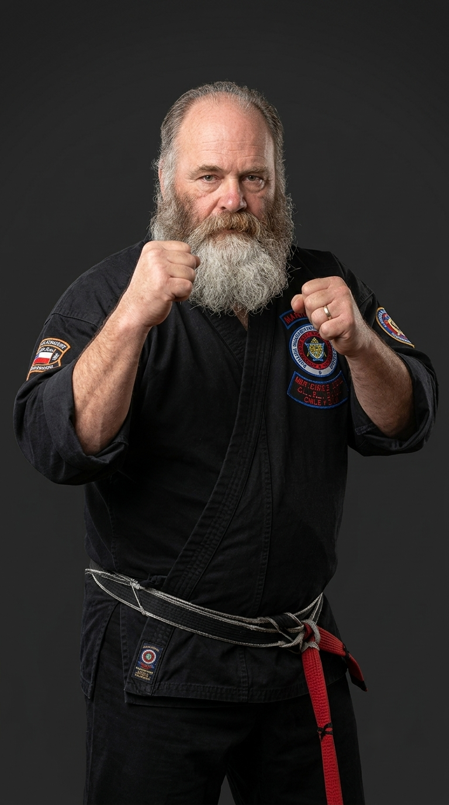
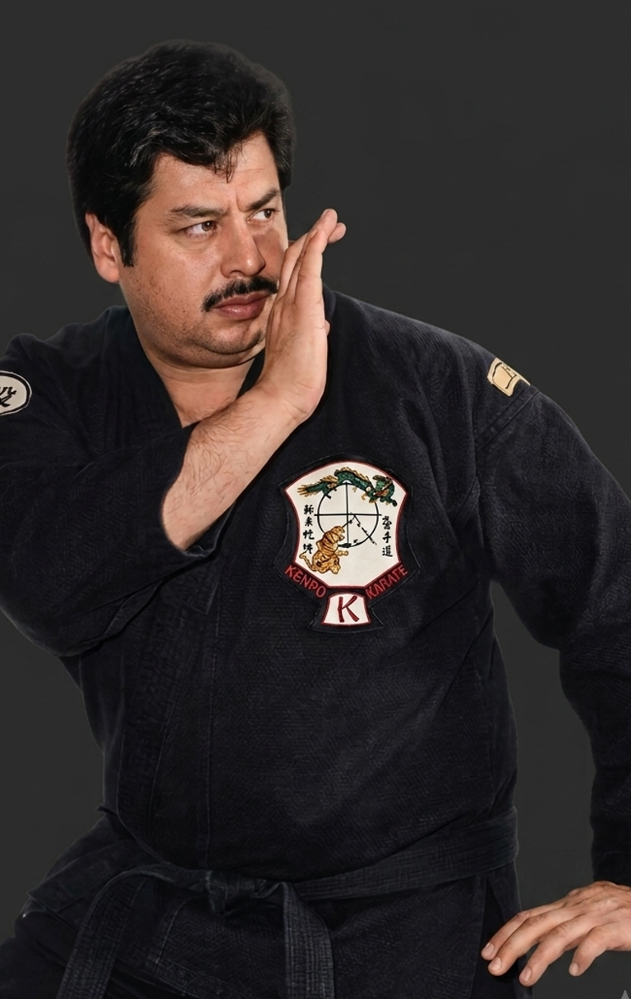
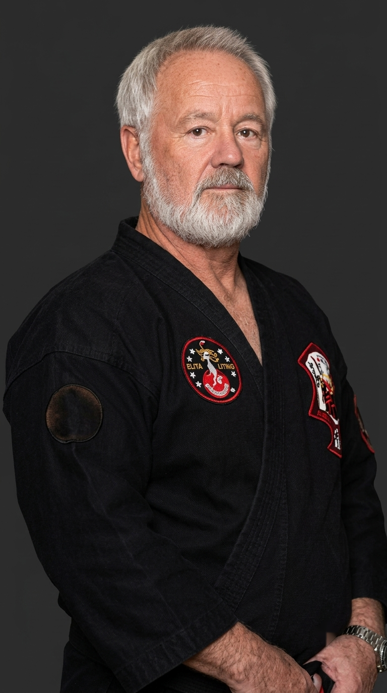
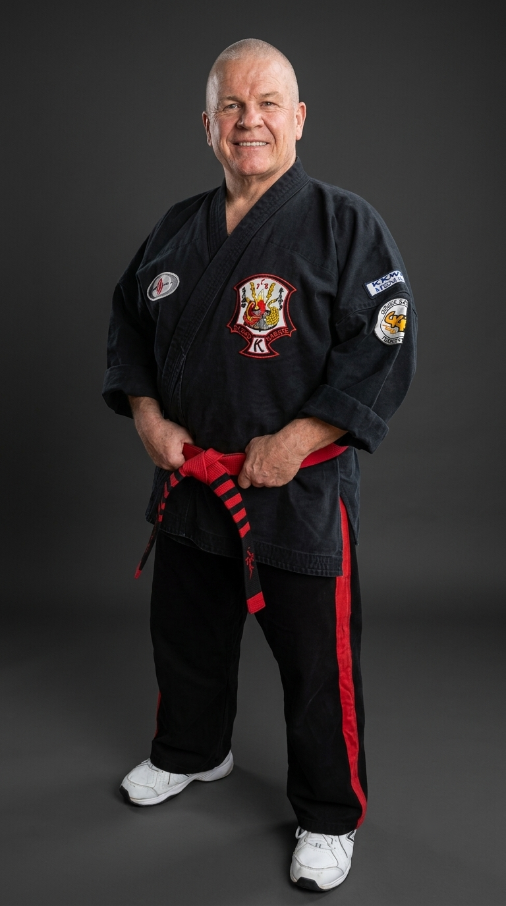
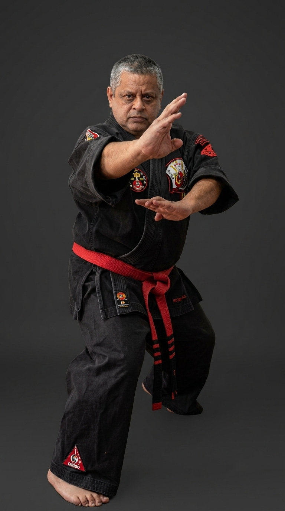
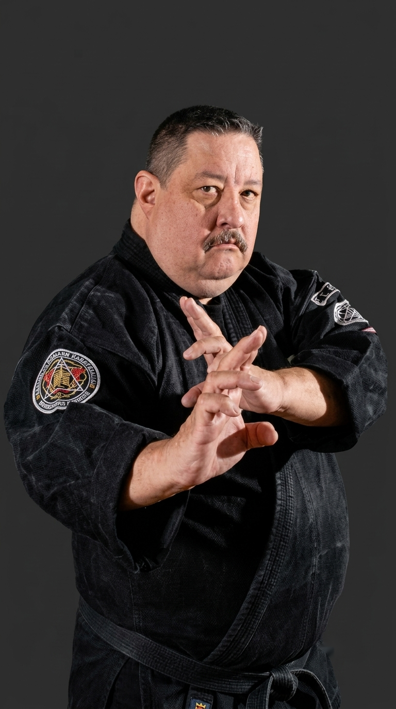
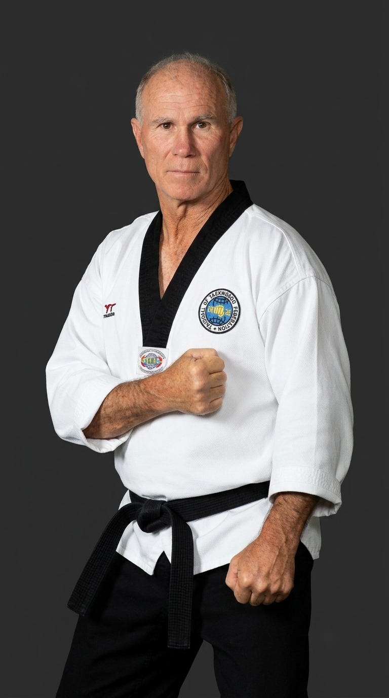
El Karate es práctica, sin práctica no hay Karate.
Buscar seminario
Por título, maestro invitado o año
Un recorrido por los seminarios internacionales IVKS/CKF realizados en Chile desde 2006, con maestros invitados de la Chinese Karate Federation.
Buscar artículo
Por título del artículo
Buscar video
Por título del video
Contenido de entrenamiento, demostraciones y filosofía marcial.
Doce grados —de cinturón amarillo a cuarto grado de cinturón negro— bajo el sistema American Kenpo de Ed Parker.
Haz clic en cada cinturón para ver sus técnicas, sets/formas y teoría.
El Kenpo Karate es apto para todas las edades. Ofrecemos programas especializados desde los 4 años para los más pequeños, pasando por adolescentes y adultos de cualquier edad. ¡Nunca es tarde para comenzar!
No se requiere ninguna experiencia previa. Nuestras escuelas reciben a principiantes absolutos y los guían desde los fundamentos más básicos del Kenpo hasta los niveles más avanzados.
El Kenpo es un sistema lógico y científico de defensa personal que se adapta a la realidad contemporánea. A diferencia de otros estilos, el Kenpo no es rígido: enfatiza la fluidez, la velocidad y la eficiencia en situaciones reales, combinando elementos de múltiples tradiciones marciales.
Recomendamos al menos 2-3 sesiones por semana para un progreso óptimo. Sin embargo, cada escuela tiene su propio horario y se puede adaptar a la disponibilidad de cada estudiante.
Sí, la Chinese Karate Federation es una organización reconocida internacionalmente, con afiliados en múltiples países. Los grados obtenidos bajo esta federación tienen validez y reconocimiento a nivel mundial.
Puedes inscribirte a través del formulario de contacto en este sitio, por WhatsApp, o visitando directamente la escuela más cercana a tu ubicación. Te invitamos a una clase de prueba sin costo.
Completa el formulario y nos pondremos en contacto contigo a la brevedad para orientarte sobre la escuela más cercana y el programa más adecuado para ti.